Indice
Scrivi un commento
[31-Lug-2004] Ricetta originale del pesto a zeneize
indice
Ingredienti:
- 2 spicchi d'aglio
- 1 bicchiere di olio extra vergine di oliva
- 4 mazzetti di basilico
- 1 pizzico di sale grosso
- 1 cucchiaio di pinoli tostati al forno (opzionali)
- 3 cucchiaiate di pecorino poco piccante
- 3 cucchiaiate di parmigiano grattugiato
Mettere nel mortaio l'aglio, le foglie di basilico lavate, il sale ed i pinoli (per la ricetta ufficiale non andrebbero messi, ma l'usanza e' diffusa). Battere lentamente con il pestello ed aggiungere, poco alla volta, i formaggi mescolati.
Quando la crema sara' omogenea, versarla in una terrina e coprirla con olio di d'oliva per meglio conservarla.
Per condire la pasta, diluire sempre il pesto con acqua di cottura.
[12-Lug-2004] Islanda - in viaggio su un altro pianeta
indice
Il viaggio in auto inizia alle 15.30, anche se l'aereo parte da Malpensa alle 23.40.
Si teme il traffico del sabato di esodo, benche' siamo contromano e poi l'ansia di partire e' effettivamente tanta!
Con cosi' tanto tempo da passare in aeroporto, abbiamo modo di soffermarci ad osservare i passeggeri che effettuano il check-in per il nostro stesso volo. Alcuni di loro saranno nostri compagni di viaggio per tutta la settimana, per cui c'e' un certo interesse in merito.
Si nota subito che l'eta' media dei viaggiatori e' intorno alla sessantina, con nostra somma meraviglia: ma gli anziani non preferivano fare vacanza tranquille e riposanti? Beh, ormai ci siamo e vada come vada.
Una strana famiglia attira subito la mia attenzione: il figlio ha evidenti problemi motori, la madre sproloquia ed il padre sembra caduto dalle nuvole. Mi ci vuole un secondo per realizzare: ci sono vari tour-operator e vari giri di diverse durate, ma ho subito la certezza che questi saranno nel nostro gruppo! Cosi' effettivamente sara', con esiti tra il drammatico ed il comico: "La Famiglia Addams" sara' il loro soprannome!
|
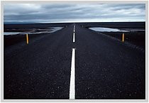
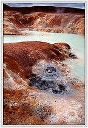
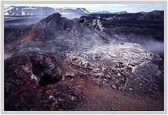
|
|
Il viaggio aereo e' tranquillo e breve (4 ore e qualcosa), pero' i nostri vicini di sedile si attrezzano con paraocchi neri, cuscino da notte e cuscino gonfiabile anti-cervicale: preparativi interminabili per cercare di prendere sonno e quando ci sono quasi riusciti ecco scattare l'ora della cena!
Dal pacco-cena saltano fuori una specie di cotoletta al formaggio immersa in un mix di riso freddo e minestra calda. Il dolce e' costituito da una barretta di cioccolato tipo sacher iper-condensata, da azzeramento della saliva per almeno 12 ore! La fame comunque evidentemente e' tanta, perche spazzoliamo il tutto in pochi bocconi!
|
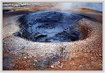
|
|
All'arrivo a Reykjavik (sono le 2 passate ora locale, recuperiamo 2 ore di fuso orario) individuiamo il nostro pullman ed incontriamo la guida locale: si chiama Paolo, e' italiano, vive in Islanda da 17 anni e sembra un tipo simpatico.
Ecco la prima sorpresa: mancano i Brunelli! Non quelli di Montalcino, ma proprio i signori Brunelli! La guida entra in panico, inizia a sproloquiare in Islandese, corre in aeroporto, telefona col cellulare, fino a che, partiti oramai tutti gli altri bus, si rassegna al destino e decide di partire alla volta dell'Hotel.
Scopriremo poi che i Brunelli, provenienti dalla Groenlandia, sono arrivati molto prima di noi e sono gia' in albergo da tempo!
|
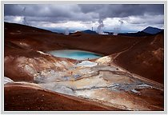
|
|
Dall'aeroporto alla citta' c'e' 1 oretta di viaggio da fare, cosi la guida comincia a decantarci gli innumerevoli difetti dell'Islanda: pochi e scontrosi abitanti, tempo sempre piovoso e ventoso, impossibilita' di vedere anche 1 solo raggio di sole per mesi e mesi anche in estate, assenza di comodita' e di divertimenti, insetti malefici pronti ad entrare in bocca in quantita' industriali nelle numerose zone paludose.
In particolare per difendersi da questi insetti, ci consiglia subito l'acquisto di una simpatica "retina" da mettere sulla testa a mo' di zanzariera: si rivelera' realmente indispensabile in almeno uno dei giorni a seguire.
Un po' provati dal viaggio, dall'ora tarda (sono passate le 5 ora italiana!) e dall'introduzione fatta dalla guida, raggiungiamo l'albergo e ci godiamo le quasi 4 ore di sonno. Ci sembrera' di aver dormito per giorni!
|
|
2^ giorno - Domenica 4 Luglio
Iniziamo a capire che in Islanda, indietro di 50 anni rispetto al mondo occidentale per molte cose, non e' ancora giunta l'invenzione del latte caldo: inutile chiederlo ai camerieri... What? sara' l'unica ed unanime risposta!
Le peggiori previsioni della guida prendono corpo: pioggia in corrispondenza delle discese dal bus, con il vento a vanificare qualsiasi tentativo di non bagnarsi. Alla fine della giornata arriverevo zuppi ma soddisfatti per le innumerevoli bellezze naturali.
Da citare: Geysir, un geyser spettacolare che soffia colonne d'acqua ogni 5 minuti; Gullfoss, la cascata d'oro, spettacolarmente imponente; Thingvellir, sede dell'antico parlamento, unica parte emersa, sul nostro pianeta, della frattura della crosta terrestre che separa la zolla Europea da quella Americana.
|
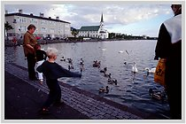
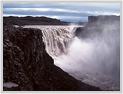
|
3^ giorno - Lunedi' 5 Luglio
La "famiglia Addams" comincia ad essere nota a tutto il gruppo e gia' c'e' gara, sul pullman, a cercare di sedersi il piu' distante possibile da loro. La madre non smette mai di parlare, minacciando anche il marito di sparargli per le sue infedelta' coniugali!!!
Visitiamo alcune tipiche e classiche abitazioni ricoperte di torba. Dopo un lungo viaggio tra panorami da bocca costantemente aperta, raggiungiamo la citta' piu' popolosa del nord, Akureyri, situata su di un fiordo spettacolare. Alla sera avremo la fortuna di soggiornare in una guesthouse situata proprio sulle rive del fiordo: una vista ed un luogo stupendi!
|
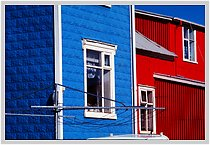
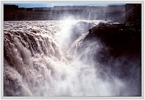
|
4^ giorno - Martedi' 6 Luglio
Si puo' definire il giorno cruciale, il piu' entusiasmante: dopo questo, qualsiasi altro spettacolo offerto dal paese sembrera' poca cosa.
Si visitano: la zona del lago Myvatn con la cascata degli dei, Godafoss; il monte Krafla, con una indimenticabile passeggiata tra i campi di lava fumante e le pozze di acqua sulfurea; il cratere di un vulcano spento che ora ospita un laghetto; le puzzolenti solfatare di Namaskard con fumarole e pozze di fango ribollenti, in un paesaggio dantesco degno di Marte!
Per restare sul pianeta rosso, si attraversa un deserto pietroso ed interminabile per arrivare in serata ad Egilsstadir.
A poca distanza dall'hotel, una piscina riscaldata all'aperto con tanto di scivolo stile Acquafan: facciamo una corsa e riusciamo a fare un tuffo. E' richiesta una doccia iniziale rigorosamente nudi e con tanto di shampoo e bagnoschiuma. Re-indossati i costumi ci si tuffa in piscina, che e' a varie temperature fino ad arrivare alla vasca-idromassaggio a 45 gradi! Un bel trattamento, che ci rimette in sesto prima di cena (pasto che qualcuno non apprezzera'... a causa di una zuppa al pomodoro, praticamente uno zumo de tomato alla catalana!).
Nell'albergo scopro inaspettatamente un calcetto ed inizio una partita con Silvia contro Saveria e Fabrizia, 3 simpatiche componenti del nostro gruppo. Non c'e' storia: Saveria e Fabrizia non oppongono resistenza e segno facilmente vari gol.
A questo punto la svolta. Mi sostituisce Daniela, che si piazza in attacco, mentre Silvia rimane in difesa.
La sfida, ora tutta al femminile, si anima alla grande e la tipica rivalita' tra donne da' origine ad una partita avvincente, con parate e colpi degni di nota: mi diverto molto di piu' a guardare che prima a giocare!!!
Peccato che mentre le ragazze si sono ormai scaldate e fanno prevedere un match avvincente, un crucco scassacazzi salti fuori da una stanza li' vicino e ci intimi: "Sleepy time! Be careful!". Ma cazzo, sono solo le 22.30!!! Sconsolati, smettiamo di li' a poco ed andiamo a fare un giro per il paesello ovviamente deserto!
|
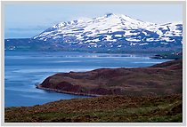
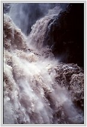
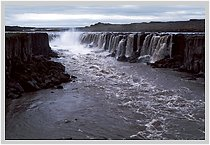
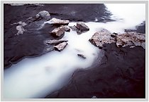
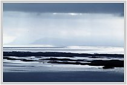
|
5^ giorno - Mercoledi' 7 Luglio
Il sole c'e' ancora, miracolo!
Il viaggio ci permette di gustare la zona dei fiordi dell'est con condimento di isolette sparse qua' e la' e tanto di paesino gemellato con un comune francese.
Fermata al Petra Stone Collection, un giardino di pietre gestito dall'omonima vecchina (una che si chiama Petra, cos'altro poteva collezionare nella vita?!): si tratta di creazioni piu' di valore artistico che geologico, ma il giardino e' molto ben curato e la scelta delle pietre quale ornamento alquanto originale!
Affrontiamo il passo di Almannaskard, un tratto della statale con massicciate di pietra lavica a picco sulla strada, totalmente priva di protezioni sia a monte che a valle: da panico!!!
Ma il vero clou della giornata ci aspetta nel dopocena.
Iniziamo avendo un diverbio non troppo amichevole con un caprone inferocito che staziona li' nei dintorni!
In compagnia di Silvia e di 4 signori del gruppo (soprannominati Il Quartetto Cetra, gente simpatica anche se un po' logorroica!) decidiamo di avvicinarci alla laguna che si staglia all'orizzone di fronte alla guesthouse.
La prima difficolta' e' rappresentata dal fiumiciattolo che ci separa dall'altra sponda: trovato un punto favorevole, spicchiamo un bel salto e con alterne fortune tutti arrivano quasi asciutti alla meta. O meglio quasi tutti, dato che un signore del quartetto non se la sente e opta per trovare un passaggio piu' agevole.
Nell'andargli incontro scopriamo che, anziche' passare attraverso il prato, c'e' uno stradino molto piu' agevole che passa all'interno dell'area cintata per i cavalli. Senza pensarci 2 volte decidiamo per la strada che sembra piu' facile.
Peccato che poco dopo il nostro ingresso ci si parino davanti 5 simpatici cavalli (ma il cavallo islandese non era tanto docile?), che non sembrano gradire la nostra presenza sul loro territorio! Un po' spaventati dalla minacciosa avanzata dei quadrupedi, decidiamo di tornare sui nostri passi e di passare per il prato.
Ma, scampato un pericolo da terra, andiamo incontro ad una minaccia dal cielo!
Daniela, colpevole solo di essere qualche passo avanti rispetto al gruppo o di avere la capigliatura piu' vistosa (dopo la mia, ovviamente!!!) viene "beccata" sulla testa da un simil-gabbiano incazzoso e tutti siamo minacciati dallo stormo che ci sorvola a bassissima quota: probabilmente stavamo per metter piede in una zona in cui le bestiole avevano i nidi!
Morale: Daniela ha 2 bei (si fa per dire) buchi sulla testa ed un gran spavento!
Respinti su tutti i fronti dalla natura ostile, realizziamo che per questa sera e' meglio metter fine all'avventura e mestamente ce ne torniamo alla fattoria.
|
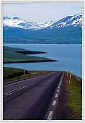
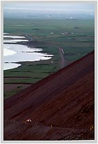
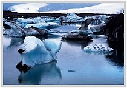
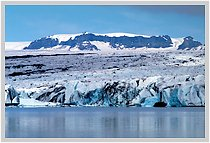
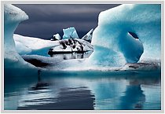
|
6^ giorno - Giovedi' 8 Luglio
Ancora un po' sotto chock per le esperienze del giorno prima, partiamo in direzione della laguna glaciale Jakulsarlon, formata da una lingua del ghiacciaio piu' grande d'Europa, il Vatnajokull.
La scianca con il bus spagnolo ci vede vincitori, cosi' possiamo essere i primi ad imbarcarci!
Gli iceberg hanno svariate forme e colori. Sotto al ghiacciaio e' attivo un vulcano che erutta con regolarita' ogni circa 10/15 anni: da qui il colore nero e le striature stile crem-caramel di alcuni di questi blocchi di ghiaccio, formatisi con l'aggiunta della roccia fusa.
Il mezzo anfibio che ci porta tra gli iceberg e' fantastico ed il momento d'entrata in acqua emozionante fin quasi alla commozione.
Siccome la barca non puo' ospitare tutto il nostro gruppo, io, Daniela, Silvia, Fabrizia, Saveria e Sandro (il cossiddetto Gruppo Cultura!) ci accomodiamo insieme ai simpatici iberici e ci becchiamo quindi lo spiegozzo nella loro lingua: e' divertente ascoltare una guida islandese che parla in spagnolo a dei turisti italiani!
Ci viene anche fatto gustare un pezzetto di iceberg, spacciato per esser antico di centinaia di anni: dal sapore non riesco a distinguerne l'eta', ma susso il bloccchetto e mi fido!
Le previsioni degli scienziati fanno supporre che questa lingua del ghiacciaio si sara' completamente sciolta entro 400 anni, lasciando un fiordo al posto della laguna: ancora non so se potro' esser li' a vederlo!
C'e' poi ancora tempo per l'avvistamento di una bella fochina: quelle dell'acquario sono bellissime, ma osservarne una allo stato brado fa un effetto diverso!
E' la stessa differenza che passa tra osservare i 4 fessi nella casa del grande marmello (una specie di zoo!) e spiare i vicini dalla finestra (questo si' uno show della realta'!!!).
La tappa successiva e' al parco nazionale di Skaftafell, con passeggiata nel verde (finalmente qualche arbusto e qualche timido alberello!) e sosta ad una delle piu' belle cascate dell'isola.
La roccia e' costituita da possenti colonne di basalto ed ha forma di anfiteatro naturale con annessa spiaggetta da sogno: i miseri panini che costituiscono il nostro pranzo ci sembrano il cenone di Natale!
C'e' ancora il tempo per una sosta alla zona lavica di Eldhraun, dove il muschio ha ricoperto le rocce formando una specie di immenso "divano" naturale che si perde a vista d'occhio. Camminare su questo soffice manto fa' tornare un po' bambini e la voglia di rotolarcisi dentro diventa irrefrenabile, tant'e' che piu' d'uno si lascia andare!
Infine si arriva a Vik, capitale della lavorazione della lana islandese, con una stupenda spiaggia di finissima sabbia lavica nera ed i pittoreschi faraglioni.
Per la passeggiata serale dopo cena, sfoggiamo finalmente la preziosa retina copri-faccia, per la gioia di un paio di indigeni a cavallo che ci osservano stupiti, trattenedo, da buoni islandesi, una risata sacrosanta!
|
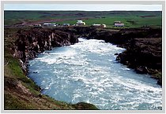
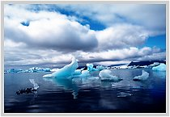
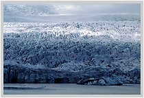
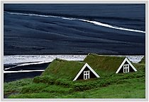
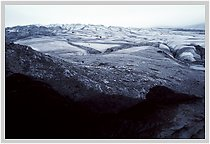
|
7^ giorno - Venerdi' 9 Luglio
La prima tappa giornaliera e' a Dirholaey, una magnifica scogliera a picco sul mare alta un centinaio di metri, zona in cui nidifica uno dei simboli dell'Islanda, il puffin o pulcinella di mare; abbiamo la fortuna di poterne vedere ed immortalare una coppia a pochi metri da noi!
La gita prosegue con visita ad altre 2 cascate: l'imponente Skogafoss e la caratteristica Seljalandsfoss che offre la possibilita', se disposti a bagnarsi un po', di poter essere ammirata anche "da dietro".
Si fa poi sosta per alcune ore nella zona piu' prettamente turistica dell'isola: la Laguna Blu, un lago di acqua sulfurea molto calda dove si puo' sguazzare a piacimento anche in inverno.
Il bagno caldo e' molto piacevole e c'e' anche la possibilita' di effettuare sauna e bagno turco.
Completano il tutto una cascatella artificiale sotto la quale ci si puo' far massaggiare la schiena dal potente getto d'acqua e la disponibilita' di maschere di fango e zolfo da applicare a piacimento sul viso o un po' ovunque!
Alla fine del bagno, ormai compreso che il viaggio e' quasi finito, rientriamo a Reykjavik dove ceniamo in un pub del centro.
Centro che, per la verita', e' molto piccolo, tanto che sembra piu' di essere in una piccola cittadina che in una capitale europea!
Abbiamo ancora il tempo di ammirare le inquietanti statue poste di fronte alla cattedrale della citta' e la vita notturna dei ragazzi locali.
Gia' carichi come delle sveglie a mezzanotte, i giovani del posto risultano anche un po' ubriacamente molesti: l'alto costo dell'alcol spinge molti ad uscire di casa gia' belli gonfi e noi che ci aggiriamo per il corso principale con l'aria "da stranieri" siamo oggetto di particolari attenzioni!.
Comunque niente di preoccupante, tant'e' che raggiungiamo sani e salvi l'albergo, posto in uno squallido quartiere periferico.
|
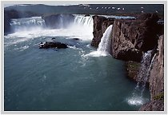
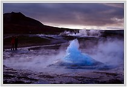
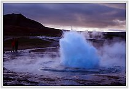
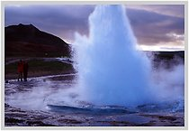
|
8^ giorno - Sabato 10 Luglio
Oggi si torna a casa, ma c'e' ancora la possibilita' di fare un giro in citta' ed un po' di shopping.
Il posto risulta abbastanza noioso, come del resto tutte le citta' del mondo, e l'arrivo della pioggia non ci turba particolarmente.
Ho ancora il tempo per lasciare sul PC dell'albergo i link al mio sito, a quello del Genoa Calcio e di Genova2004 capitale della cultura: un po' di sano campanilismo non guasta mai!!!
L'attesa prima del check-in e dell'imbarco trascorre senza sorprese, cosi' come il viaggio.
All'arrivo a Malpensa il tempo e' bello, le valigie si fanno attendere e nel frattempo salutiamo calorosamente le piu' simpatiche componenti del gruppo (tra cui una "sia" settantenne dallo spirito giovanile), con le quali si era creato realmente un bel rapporto di amicizia!
Tristemente raggiungiamo l'auto e ripartiamo alla volta di casa.
Intorno alle 4 l'arrivo in valle, non prima di una immancabile fermata dal forno per il rituale rifornimento di focaccia calda!
La lunga notte (ci sveglieremo alle 15.30!) trascorre nel ricordo delle meraviglie viste nei giorni appena passati, con la consapevolezza che, comunque sia, una fettina di cuore e' rimasta lassu', imprigionata tra i ghiacci ma scaldata da un getto di acqua calda!
Ciao Iceland, we'll be back!!!
|
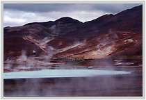
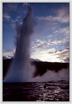
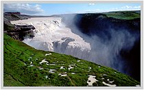
|
|
[6-Giu-2004] Io non mi faccio "condizionare"
indice
Questa volta voglio fare un po' l'ambientalista!
E' iniziata l'estate ed e' arrivato il caldo. Non e' un caldo insopportabile, basta bere un po' di piu' ed aspettare qualche giorno che il fisico si abitui al nuovo clima.
Pero' la tv ed i giornali devono creare, come sempre, allarmismo e ci stanno convincendo che il caldo sara' insopportabile, devastante. Un cataclisma insomma!
E' vero, ci sono alcune categorie di anziani che, con temperature molto elevate, rischiano la salute, ma sono una minoranza e per loro e solo per loro bisogna pensare a misure di difesa.
Invece il martellamento mediatico sta convincendo tutti, vecchi e giovani, massaie ed impiegati, che dobbiamo a tutti i costi combattere l'ondata di caldo in modo "artificiale", cioe' non con semplici metodi casalinghi quali, ad esempio, bersi una granita o mangiare una pesca, ma utilizzando uno strumento oramai diventato quasi indispensabile per qualunque famiglia: il condizionatore.
Perche' nessuno ci invita invece a fare un piccolissimo esame di coscienza, in proposito?
Il clima della nostra odiata (visto come la trattiamo!) Terra, si sta costantemente riscaldando, a causa dell'inquinamento, dei gas-serra, delle emissioni che la civilta' tecnologica continua a produrre in misura sempre maggiore.
I ghiacciai polari si vanno sciogliendo, le citta' costiere rischiano di finire sott'acqua, un'infinita' di specie animali si stanno estinguendo e quelle tropicali iniziano a popolare le aree una volta a clima temperato.
Una delle principali cause dell'inquinamento mondiale e' la produzione dell'energia elettrica, la cui richiesta e' in costante e pauroso aumento!
Siamo entrati in un circolo vizioso.
Siamo soci!
Il pianeta si surriscalda, per rinfrescarci ci dotiamo tutti di un bel condizionatore, questo fa fresco in casa nostra e spara il caldo in quella del vicino che, esasperato, decide di barricarsi in casa e di comprare anche lui un bel condizionatore.
Via cosi' fino a che in casa ed ufficio staremo freschissimi, ma fuori avremo il cammello parcheggiato in doppia fila vicino a qualche duna di sabbia!!!
Ancora qualcuno mette in dubbio le teorie evoluzionistiche di Darwin? Se fossi una scimmia allora si che mi vergognerei di avere dei discendenti cosi' stupidi come gli uomini!!!
Si puo' sperare di ottenere risultati agendo da soli? Forse no, pero' e' proprio uno di quei campi dove giova tener bene a mente quel che diceva il saggio mentre pisciava in mare: TUTTO FA!!!
[25-Apr-2004] Il mondo in un villaggio - vecchio ma sempre attuale
indice
Se potessimo riunire la popolazione del mondo intero in un villaggio di 100 persone, mantenedo le proporzioni di tutti i popoli esistenti, il villaggio sarebbe composto in questo modo:
| 57 Asiatici
| 21 Europei
| 14 Americani
| 8 Africani
|
| 52 Donne
| 48 Uomini
|
| 70 Non cristiani
| 30 Cristiani
|
| 70 Non bianchi
| 30 Bianchi
|
6 possiederebbero il 59% della ricchezza del mondo intero
80 vivrebbero in case senza abitabilità
70 sarebbero analfabeti
50 soffrirebbero di malnutrizione
1 starebbe per morire
1 starebbe per nascere
1 possiederebbe un computer
1 avrebbe la laurea
Se vi siete svegliati questa mattina con più salute che malattia, siete più fortunati di 1 milione di persone che non vedranno la prossima settimana.
Se non avete mai provato il pericolo di una battaglia, la solitudine dell'imprigionamento, l'agonia della tortura o i morsi della fame, siete più avanti di 500 milioni di abitanti di questo mondo.
Se potete andare in chiesa senza la paura di essere minacciati, arrestati, torturati o uccisi, siete più fortunati di 3 miliardi di persone di questo mondo.
Se avete cibo nel frigorifero, vestiti addosso, un tetto sopra la testa e un posto per dormire siete più ricchi del 75% degli abitanti del mondo.
Se avete soldi in banca, nel vostro portafoglio o anche solo degli spiccioli da qualche parte, siete fra l'8% delle persone più benestanti al mondo.
|
|
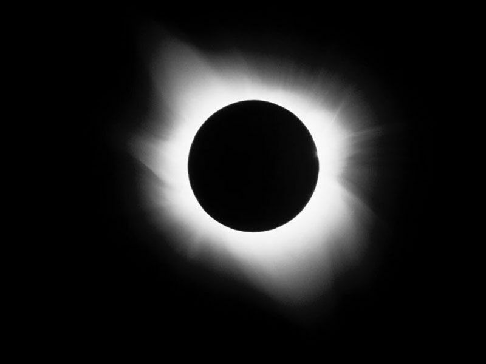
[14-Feb-2004] Ciao Pirata!
indice
Pantani se ne e' andato da solo, come piaceva a lui da corridore.
Una volta aveva dichiarato che andava cosi' forte in salita perche' cosi' finiva prima di soffrire!
Era la sua solita sparata, un modo di far notare ironicamente la sua superiorita` schiacciante.
Non si poteva non odiarlo: dopo averci fatto ri-innamorare del ciclismo con le sue imprese,
ce lo aveva fatto disprezzare con quella squalifica a Campiglio;
dopo allora era diventato irriconoscibile, l'ombra del campione che avevamo amato.
Doveva essere difficile ricominciare dopo una botta del genere, anche per uno che si era gia` ripreso piu' volte da incidenti fisici tremendi.
Marco visse qulla squalifica come una persecuzione: dei primi 10 di quel Giro, ben 6 avevano valori di ematocrito fuori dalla norma, ma solo lui venne squalificato,
lui solo fu il capro espiatorio, subi' indagini da 7 procure e processi pubblici su tutti i media.
Questo e' il prezzo che pago' per la sua grande popolarita': grandi poteri comportano grandi responsabilita'.
La tristezza che proviamo oggi e' stretta parente delle gioie che ci ha regalato e se in passato aveva sbagliato adesso ha pagato con interessi tremendi.
Marco era un grande ciclista, ma forse non un altrettanto grande uomo: la bici era il suo modo di esprimersi e di realizzarsi, una coperta di Linus
dietro cui rifugiarsi, una maschera che lo trasformava in un super-eroe.
Grazie al ciclismo, forse, riusciva a superare tutte le incertezze, i complessi, le fobie, di una vita vissuta con sofferenza, quasi come un male incurabile.
Una volta tradito dal ciclismo lo ha a sua volta tradito: ha dovuto affrontare una scelta cruciale, scegliere cosa diventare ben sapendo cosa era stato.
Purtroppo, tra tante possibilita', ha optato per quella piu' drastica: rimanere un ciclista per sempre,
entrare nel mito senza aspettare il futuro.
Anche l'ultimo traguardo, Marco, ha voluto tagliarlo in solitudine, come sulle sue montagne: addio Pirata, ci mancherai!
L’ultima lettera di Marco
"Sono stato umiliato per nulla. Per quattro anni sono in tutti i tribunali, ho solo perso la mia voglia di essere come tanti altri sportivi, ma il ciclismo ha pagato e molti ragazzi hanno perso la speranza della giustizia. E io mi sto ferendo con la deposizione di una verità sul mio documento, perchè il mondo si renda conto che se tutti i miei colleghi hanno subito umiliazioni, in camera con le telecamere nascoste per cercare di rovinare le famiglie; e poi dopo come fai a non farti male. Io non so come mai mi fermo in casi di sfogo come questi. Mi piacerebbe, io so di aver sbagliato con le prove però, ma solo quando la mia vita sportiva, soprattutto privata, è stata violata, ho perso molto".
"E sono in questo paese con la voglia di dire che hasta la victoria è un grande scopo per uno sportivo. Ma il più difficile è di aver dato il cuore per uno sport, con incidenti e infortuni: e sempre sono ripartito. Ma cosa resta, c'è tanta tristezza e rabbia per le violenze che la giustizia a tempi è caduta nel credere. Ma la mia storia spero che sia di esempio agli altri sport che le regole, sì, ma devono essere uguali per tutti. Non esiste lavoro che per esercitare si deve dare il sangue, i controlli di notte alle famiglie degli atleti".
"Io non mi sono sentito più sereno di non essere controllato in casa, in albergo, dalle telecamere e sono finito per farmi del male, per non rinunciare alla mia intimità, all' intimità della mia donna, e degli altri colleghi che hanno perso. E molte storie di famiglie violentate. Ma andate a vedere cos' è un ciclista e quanti uomini vanno in mezzo alla torrida tristezza per cercare di ritornare con quei sogni di uomo che si infrangono con le droghe: ma dopo la mia vita di sportivo. E se un pò di umanità farà capire e chiedere cosa ci fa sperare e che con uno sbaglio vero si capisce e si batte, perchè si sta dando il cuore. Questo documento è verità, la mia speranza è che un uomo vero o una donna legga e si ponga in difesa di chi, come si deve dire al mondo, regole per sportivi uguali per tutti. E non sono un falso, mi sento ferito e tutti i ragazzi che mi credevano devono parlare. Ciao Marco".
Un passo indietro
Adesso, con il senno di poi, bisogna ripensare a quel Giro, a quella squalifica, al disprezzo della prima ora.
Tutti i controlli anti-doping, in tutti gli sport (calcio, ciclismo, atletica, sci di fondo, body-building, solo per citare i piu` famosi)
hanno dimostrato che la pratica del doping non solo e' diffusa, ma e' una vera e propria prassi:
gli atleti, professionisti e non, ingurgitano talmente tanti tipi di farmaci che spesso non conoscono nemmeno la composizione di questi "cocktail" micidiali.
Esiste un anche un doping che viene definito "cosmetico" perche' finalizzato non tanto al miglioramento delle prestazioni, ma all'abbellimento del corpo.
Bisogna capire a chi giova il doping: pensare sia solo per l'atleta e' da ingenui.
In cima alla catena ci sono le case farmaceutiche.
Spendono somme ingenti per la ricerca di prodotti che aumentino le prestazioni sportive, in modo a volte "lecito" a volte no.
Questi prodotti rendono molto in termini economici, perche' destinati al mercato "ricco" dello sport professionistico.
Lo smercio e l'importazione illecita sono nelle mani della criminalita' organizzata.
Il giro d'affari di questi traffici illeciti e' enorme, quindi e' impensabile che i criminali non entrino anche in questo campo.
Molti utilizzatori, poi, dato l'alto costo di queste sostanze, diventano a loro volta spacciatori: non e' raro conoscerne qualcuno frequentando palestre ed ambienti agonistici anche amatoriali.
Poi ci sono le societa'.
Aumentare le prestazioni dei propri atleti ha molteplici ritorni economici, di immagine e di prestigio.
In poche parole significa mungere piu' soldi a sponsor, federazioni, TV e giornali.
Investire qualche milione in preparati chimici e nell'onorario di medici e farmacisti senza scrupoli ha ottimi ritorni.
Del resto stiamo parlando di societa' professionistiche, che sono tutto fuorche' senza fine di lucro!
Arriviamo agli atleti.
In molti casi sono le societa' stesse a ricattarli: o accettano le cure che gli vengono imposte o rischiano l'ingaggio, l'esclusione dalla squadra, la cessione, ecc.
Resistere a queste lusinghe e' difficile, ci sono in ballo ingaggi stratosferici, carriera e popolarita'.
Cosi' uno pensa: faccio questo mestiere solo 10 anni, ho una salute di ferro, poi smetto di prendere
'sta roba e va tutto a posto... le malattie verranno a qualcun'altro.
Con questo non scagiono del tutto gli atleti, ma nella catena sono quelli piu' esposti, perche' giocano e rischiano sulla propria pelle.
Non dimentichiamoci dei media.
A giornali, radio e TV fa gola il personaggio che compie imprese straordinarie: fa vendere piu' copie, fa aumentare l'audience, permette di creare sensazionalismi, titoloni ad effetto, gossip e quant'altro "renda" in termini economici.
Nel momento in cui le imprese cessano ed il campione va in declino, per i media e' di nuovo festa: le crisi ed i gossip fanno ancora piu' notizia, perche' solleticano il lato piu' meschino e invidioso della curiosita' degli spettatori.
Questo accanimento, nel bene e nel male, non deve essere facile da sopportare per chi non ha sufficiente forza d'animo.
In fondo mettiamoci noi tutti.
Chiunque sia appassionato di sport sa quanto sia bello vincere, sia da sportivo che da tifoso.
Dai nostri idoli e dalle nostre squadre vorremmo sempre grandi soddisfazioni ed emozioni, spesso a qualunque costo.
Moralmente siamo un po' colpevoli: colpevoli di pretendere grandi imprese da atleti che, in fondo, non sono altro che uomini;
grandi uomini, quasi eroi, ma pur sempre terrestri con le loro debolezze ed i loro problemi.
|
Detti e ridetti (...e rido ancora adesso!)
indice
Queste scarpe non sono originali, sono una simulazione
Si sono rifugiati in un bungalow antiatomico
Non posso mangiare la pasta perche' ho un'allergia ai glutei
Sono alla mercedes degli eventi
Non vado spesso al cinema, mi capita di andarci santuariamente
Pizza da esporto (e` fornita insieme al passaporto...)
Latte compensato (lo si ottiene mungendo un`apposita mucca di legno...)
Il maniglione antipatico
|
Trattati
L'insostenibile leggerezza dell'acqua minerale
|
Titoli da non perdere
C'e' un poster per te
2001 odissea nell'ospizio
Mio marito davanti, dietro tutti quanti
La maggiorata Potiomkin
Cliccami la passera
Via col ventre
Biancalecca ai sette nani
|
Darwin Awards 2003
indice
E' tornato il momento magico dell'anno in cui vengono attribuiti i
Darwin
Awards, che hanno lo scopo di onorare quelli che, tra la razza umana,
sono i meno evoluti.
Ecco i gloriosi vincitori per il 2003, con una breve descrizione
delle
loro epiche gesta.
1. Quando il suo revolver calibro 38 ha mancato di far fuoco sulla
vittima
designata, durante una rapina a Long Beach, California, l'aspirante
rapinatore
James Elliot ha commesso un piccolo errore di valutazione. Ha girato il
revolver, per osservare la canna ed ha provato a remere di nuovo il
grilletto.
Ma questa volta ha funzionato....
2. Lo chef di un Hotel in Svizzera ha perso un dito in un tagliacarne
e,
dopo
aver imprecato in non si sa bene quale lingua, ha inviato una richiesta
di
risarcimento alla propria compagnia assicuratrice. La compagnia,
sospettando
una negligenza, ha mandato un suo ispettore per verificare le
circostanze.
L'ispettore ha provato il tagliacarne e ci ha rimesso a sua volta un
dito.
La richiesta di risarcimento e' stata approvata.
3. Un uomo che si era messo a spalare neve per oltre un'ora in modo da
far
posto quanto bastasse per parcheggiare la propria macchina durante una
tempesta
di neve a Chicago, e' andato a prendere la propria auto e, tornato al
luogo
tanto faticosamente pulito, vi ha trovato una donna che aveva appena
elegantemente parcheggiato nello spazio libero. Comprensibilmente le ha
sparato
due fucilate all'addome.
4. Dopo essersi fermato a bere in un bar clandestino, l'autista di un
autobus
dello Zimbabwe si e' accorto che i 20 malati mentali che avrebbe dovuto
trasportare da Harare al manicomio di Bulawayo erano scappati. Non
volendo
ammettere la sua negligenza, l'autista si e'
recato ad una vicina fermata di autobus ed ha offerto ai passeggeri in
attesa
una corsa gratuita. Ha poi condotto il bus dentro il manicomio ed ha
consegnato
gli ignari passeggeri, dichiarando al personale del manicomio che si
trattava
di pazienti molto irritabili e portati a raccontare storie fantasiose.
L'inganno non e' stato scoperto che tre giorni dopo.
5. Un teenager americano e' stato ricoverato in ospedale per gravi
ferite
alla testa provocate dal sopraggiungere di un treno. Quando gli venne
chiesto
come aveva fatto a procurarsi le ferite, il giovanotto ha racocntato alla
polizia che stava emplicemente cercando di verificare quanto poteva
riuscire
ad avvicinarsi ad un
treno in movimento prima di venire colpito.
6. Un uomo e' entrato in un market della Louisiana, ha messo una
banconota da
20 dollari sul banco e ha chiesto che gli venisse cambiata. Quando il
commesso
ha aperto il cassetto, l'uomo ha estratto una pistola ed ha chiesto che
gli
venisse consegnata tutto quello che c'era nel cassetto, ed e' poi
scappato
via,
lasciando la banconota da 20 dollari sul banco. Un controllo sul totale
che
era stato rapinato dal cassetto dava... 15 dollari! (se qualcuno ti punta
una
pistola e ti da' del denaro, si tratta di un crimine?)
7. Un tizio in Arkansas desiderava cosi' tanto farsi una birra da
decidere di
tirare un mattone attraverso la vetrina di un negozio di liquori per
prendere
qualche bottiglia e poi scappare via. Sollevo' il mattone e lo tiro'
sulla
vetrina per vederlo rimbalzare sulla sua testa, lasciandolo a terra privo
di
conoscenza. La vetrina del
negozio di liquori era di plexiglas. L'intera vicenda e' stata filmata
dalla
telecamera interna.
8. Una signora che stava uscendo da un negozio di New York si e' vista
strappare la borsa da un uomo che e' fuggito via correndo. Il commesso ha
prontamente chiamato il 911 e la donna e' stata in grado di fornire alla
polizia una dettagliata descrizione dello scippatore.
Entro pochi minuti la polizia era riuscita a catturarlo, metterlo in
macchina
e portarlo indietro al negozio. Il ladro venne poi fatto uscire dalla
macchina
e gli venne detto di rimanere fermo per una identificazione positiva. Al
che
rispose, "Si, agente, e' lei, Quella e' la signora alla quale ho rubato
la
borsetta."
9. La pagina della cronaca locale dell'Ann Arbor News ha riportato il
caso di
uomo che, dopo essere entrato in un Burger King di Ypsilanti, nel
Michigan,
alle 5 del mattino, ha tirato fuori una pistola ed ha chiesto del
contanti. Il
commesso si rifiuto' di consegnarglielo perche' non gli era possibile
aprire il
registratore di cassa senza l'ordine per una consumazione. Quando l'uomo
ha
allora ordinato delle cipolle affettate, il commesso ha detto che non
erano
disponibili per la prima colazione. L'uomo, frustrato, se ne e' andato
via.
10. Quando un uomo ha cercato di aspirare benzina da un tubo infilato
nel
serbatoio di un camper parcheggiato in una strada di Seattle, si e'
ritrovato
con molto di piu' di quello che stava cercando. La polizia e' infatti
arrivata
sul luogo per trovare una persona in preda a conati di vomito e piegata
in
due
vicino alla tanica per i rifiuti della toilette chimica del camper. Un
portavoce della
polizia ha dichiarato che l'uomo ha ammesso di aver cercato di rubare
della
benzina dal serbatoio ed ha infilato a tal scopo un tubo in quello che
credeva
fosse il bocchettone della benzina ed era invece lo scarico delle acque
nere.
Il proprietario del veicolo si e' rifiutato di sporgere denuncia,
dichiarando
di essersi fatta una delle migliori risate della sua vita.
|
top
| | |